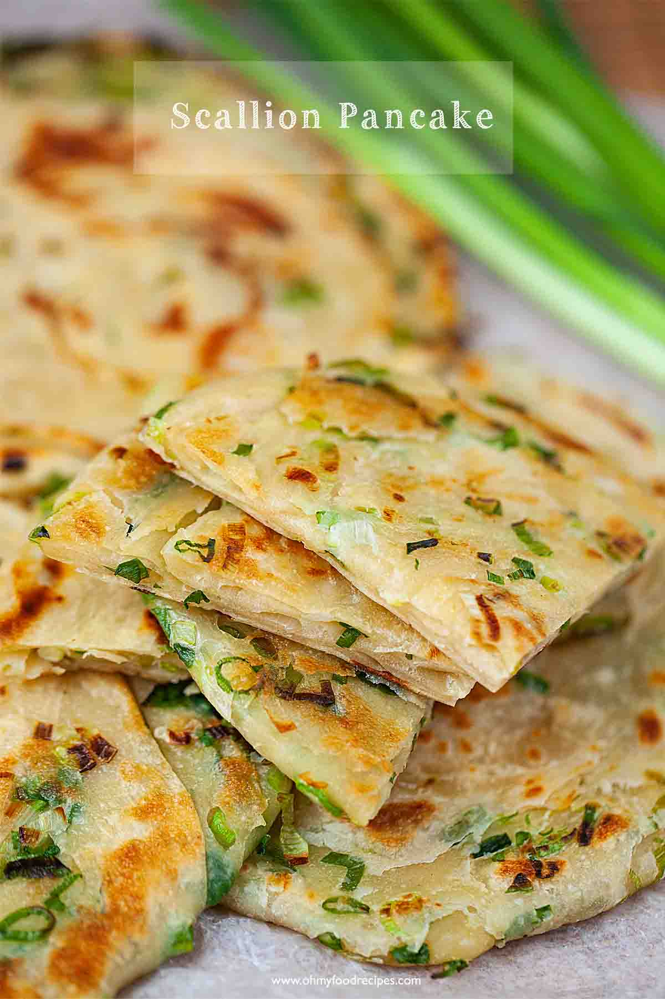

Green Onion Pancake Recipe
Source: https://www.ohmyfoodrecipes.com/scallion-pancake/

Description
Classic and traditional Chinese green onion pancake is the best for snack, breakfast or lunch. This Chinese scallion pancake or cong you bing recipe only has a few ingredients. Let’s learn how to make scallion pancakes at home!
Ingredients
- 8 sticks Green onion
- 1 tablespoon Vegetable oil (½ tablespoon for brushing the dough & ½ tablespoon for pan frying the pancake)
- ¼ teaspoon Salt (Sprinkle on four flatten dough)
- 2 cups All purpose flour
- ½ teaspoon Salt
- 1 cup Water
Steps
- Put 2 cups of all purpose flour into a bowl. Then, add ½ teaspoon of salt. Mix it well.
- Pour the flour mixture from step 1 into the Bosch mixer. Turn on the lowest setting #1, slowly add 1 cup of water. Let the mixer run for 2 minutes.
- Take the dough out from the mixer and put it into a bowl.
- Cover the dough with a cloth and rest for 20 minutes.
- In the meanwhile, wash and cut 8 sticks of green onion.
Return to top
Return to main page